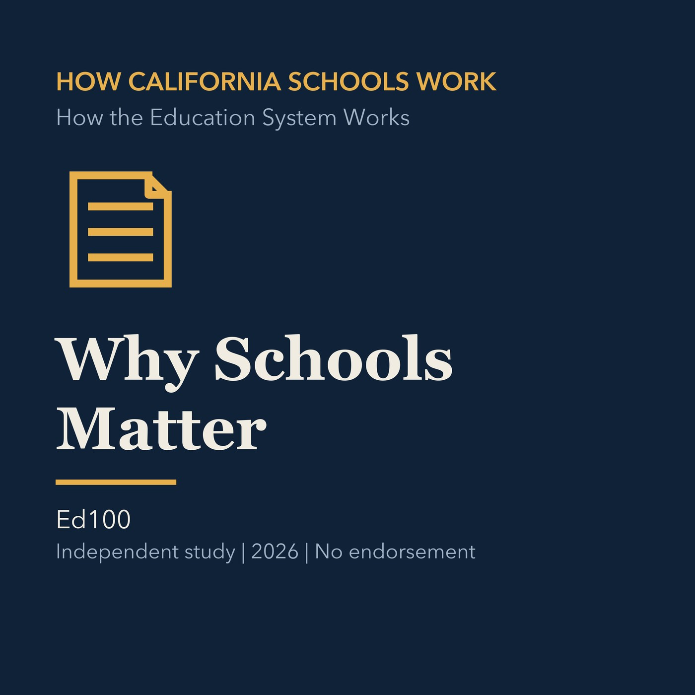
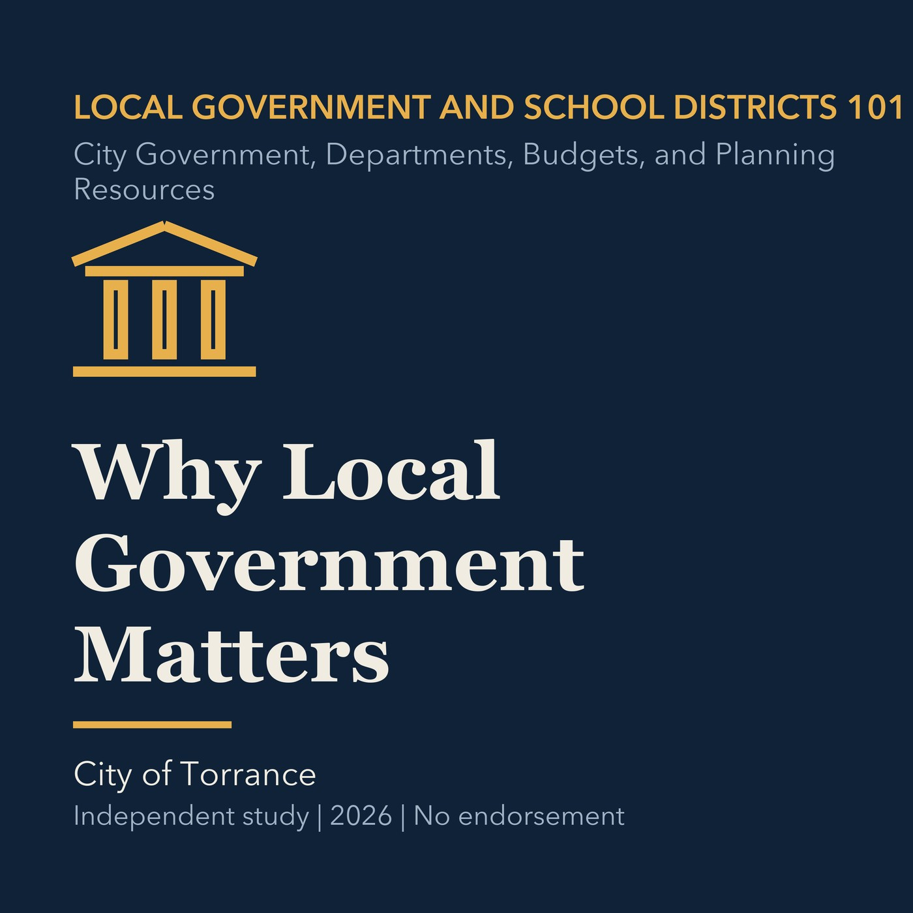
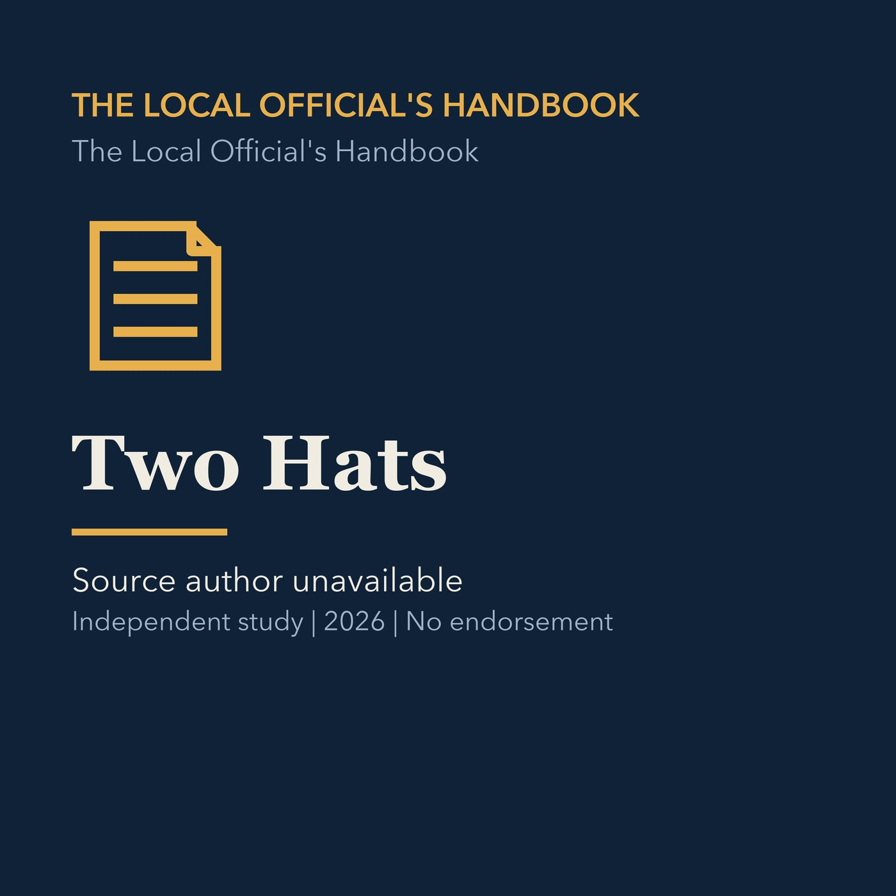
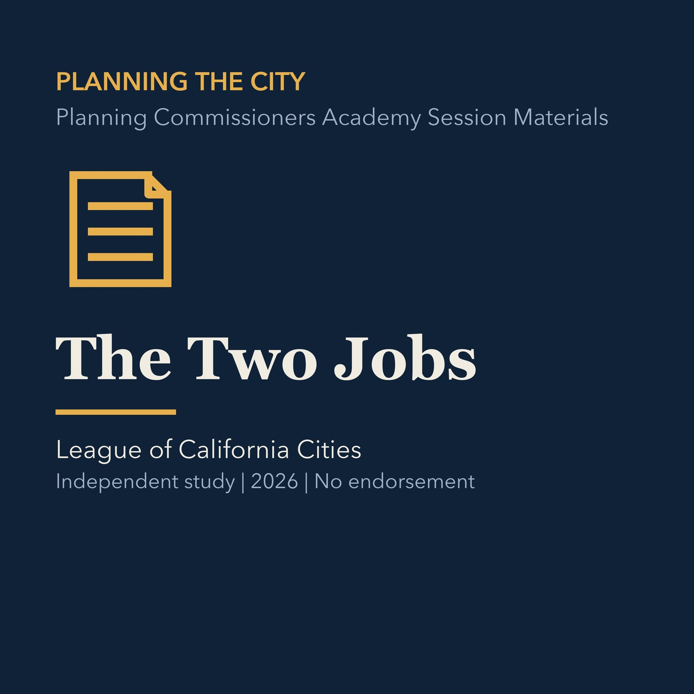
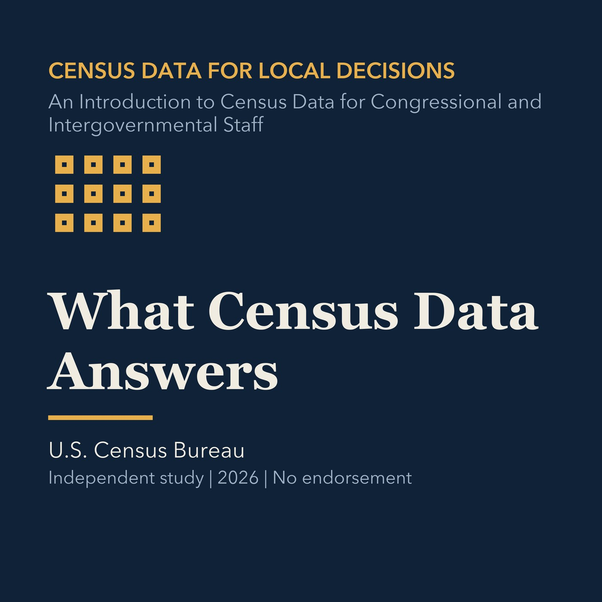
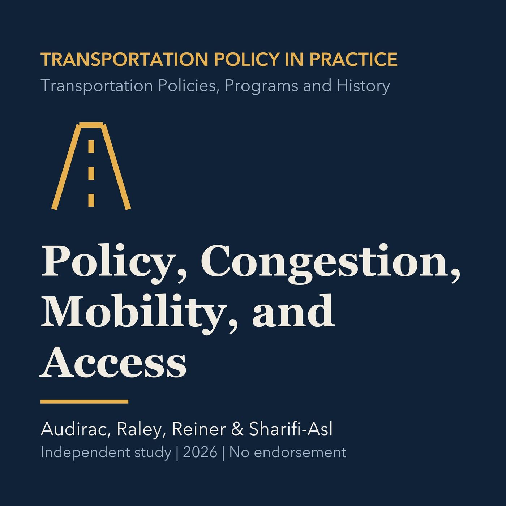
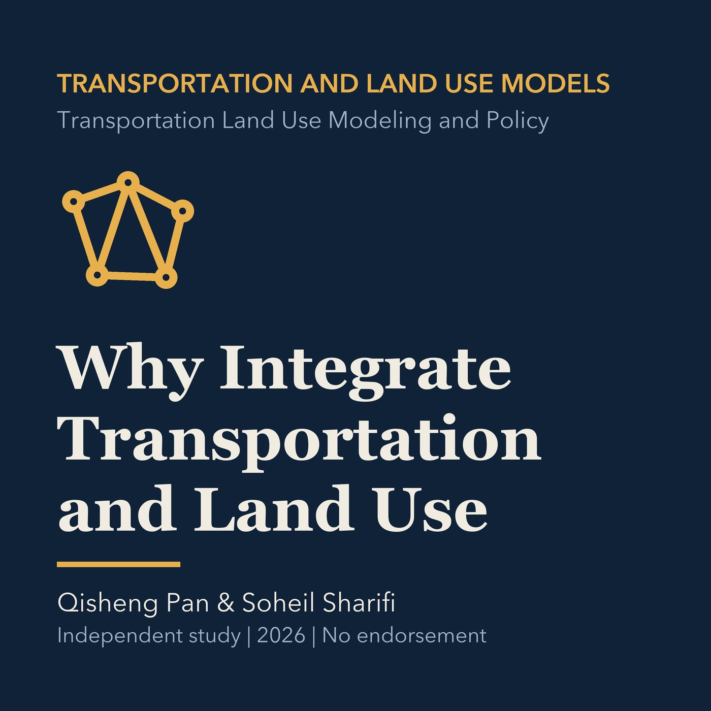
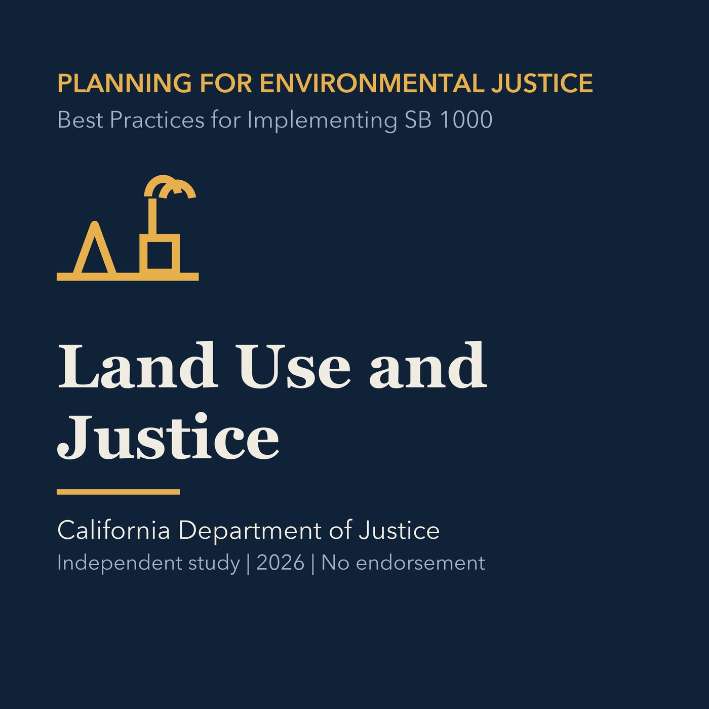

10 EPISODES · VERSION 2026.3
How California Schools Work
A 10-episode companion course on California students, educators, governance, finance, standards, accountability, and school improvement.
INDEPENDENT CIVIC STUDY
12 accessible audio courses with 152 episodes for public service, planning, education, and policy study.

10 EPISODES · VERSION 2026.3
A 10-episode companion course on California students, educators, governance, finance, standards, accountability, and school improvement.

10 EPISODES · VERSION 2026.3
A 10-episode introduction to California cities, counties, special districts, school districts, public finance, voting, and civic participation.

14 EPISODES · VERSION 2026.3
A 14-episode practical guide to local public service, open government, planning, housing, regional institutions, and public decision-making.

36 EPISODES · VERSION 2026.3
A 36-episode advanced course in public hearings, land use, housing, transportation, environmental justice, and municipal finance.

8 EPISODES · VERSION 2026.3
An eight-episode practical course for reading projects, making findings, navigating CEQA, and acting after the vote.
12 EPISODES · VERSION 2026.3
A 12-episode interdisciplinary study course spanning government, sociology, psychology, economics, writing, and algebra.

9 EPISODES · VERSION 2026.2
A nine-episode course connecting public-sector financial tools to mission, accountability, costs, budgets, and repeatable strategy.

14 EPISODES · VERSION 2026.2
A 14-episode practical course on Census data, geography, uncertainty, APIs, housing, commuting, business, and government finance.

10 EPISODES · VERSION 2026.2
A 10-episode course on transportation policy history, institutions, planning, mobility programs, sustainability, and global lessons.

13 EPISODES · VERSION 2026.2
A 13-episode course on integrated transportation and land-use modeling, data, scenarios, trip generation, mode choice, and feedback.

8 EPISODES · VERSION 2026.2
An eight-episode course on designing public places, services, information, and decision processes for equitable outcomes.

8 EPISODES · VERSION 2026.2
An eight-episode course on environmental justice evidence, land-use policy, implementation, accountability, and planning review.